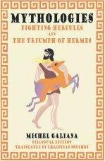
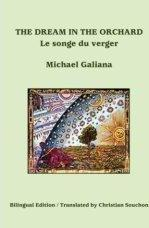
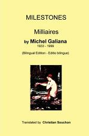
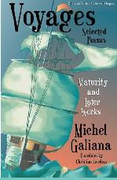

Poèmes de Michel Galiana (1933-1999)
Poems by Michel Galiana (1933-1999)
Notice biographique
Paperbacks available at - Ouvrages brochés sur AMAZON.COM:
|
Mythologies |
Dream in the Orchard
|
Milestones |
Voyages |
|
|
 |
 |
 |
 |
(Ou copiez-collez ces liens dans votre navigateur - Or copy-paste above links in your browser)
Palais Galiana
Galiana's Palace

Le Songe du Verger
The Dream in the Orchard
D'un livre d'heures
Out of a Book of Hours
Cinq recueils de poèmes
Five Collections of Poems
|
Hercule combattant (Zodiaque alchimique) * Sept pages d'un livre de pierre (Suite Pragoise) * Hermès triomphant * Chanson pour la murène Chansons de la Sirène * Tapuscrit 9570 du 10.01.1989 |
Fighting Hercules (An alchemical zodiac) * Seven Pages out of a Stone Book (Prague Suite) * The Triumph of Hermes * Song for a Moray Eel The Mermaid's songs * Typescript 9570 dated January 10, 1989 |
Milliaires
Milliary Columns
In Memoriam
Translated by Christian Souchon with the kind help of Dr Klaus Engelhardt and Ms. Lois June Wickstrom.
For other poems click on one of these links: D'autres poèmes sur ces sites:
http://www.poemhunter.com/michel-galiana/
http://poemsabout.com/poet/michel-galiana/page-1/
http://www.poetbay.com/poetHome.php?writerId=2910